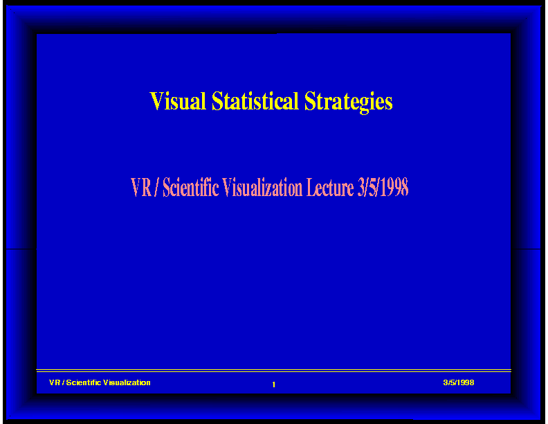
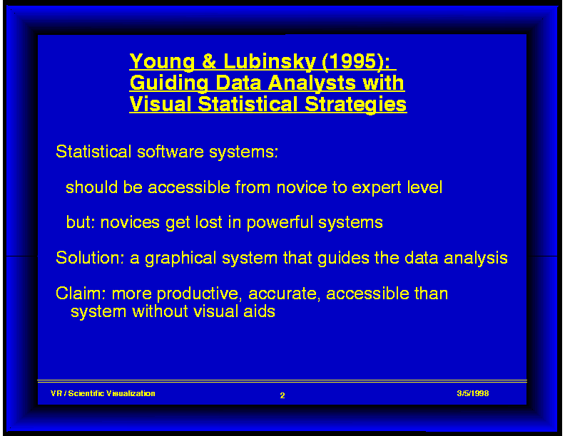
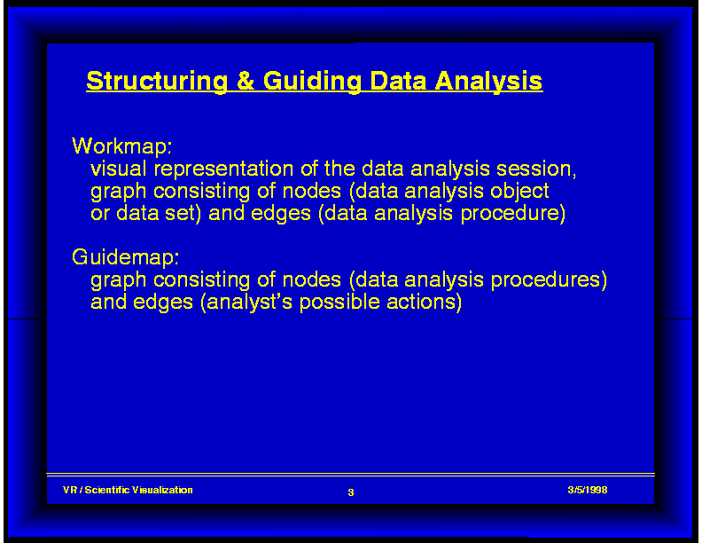
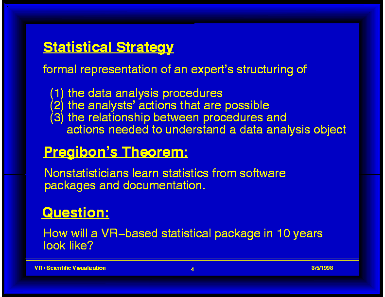

<H2>Lecture 3/05/98 - Slides:
Visual Statistical Strategies</H2>

<BR><BR>


<UL>
<TABLE BORDER=1 CELLSPACING=0 CELLPADDING=0 >
<TR ALIGN=CENTER VALIGN=CENTER>

<TD ALIGN=CENTER VALIGN=CENTER>

<CENTER><P><A HREF="3_05_01.gif">
</A></P></CENTER>
</TD>

<TD>
<CENTER><P><A HREF="3_05_02.gif">
</A></P></CENTER>
</TD>
</TR>

<TR>
<TD>
<CENTER><P><A HREF="3_05_03.gif">
</A></P></CENTER>
</TD>

<TD>
<CENTER><P><A HREF="3_05_04.gif">
</A></P></CENTER>
</TD>
</TR>

</TABLE>
</UL>

